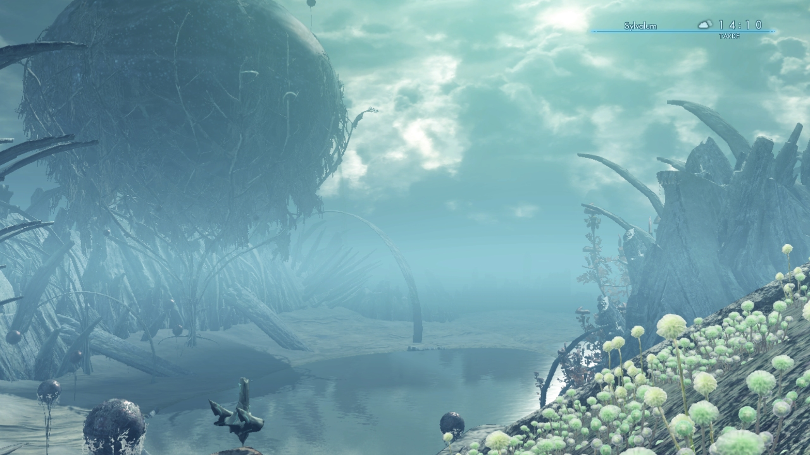
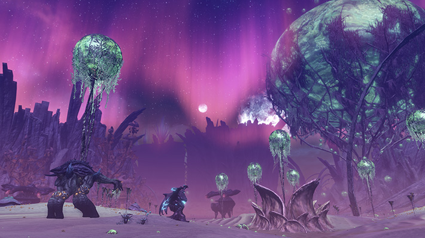
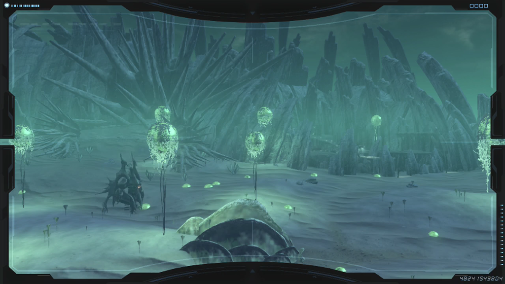

| Primordia | Noctilum | Oblivia | Sylvalum | Claudros |
| Sylvalum is located approximately at the center of the
map, southwest of Claudros and above Primordia. Sylvalum region is a mysterious place with it's white sand like surface and intruiging column shaped mountain figures with alien-like glowing spheres of trees. Chapter 9's story segement will take place in this area after a report arrives of another "lifehold" spotted there. |
 |
|  |  |